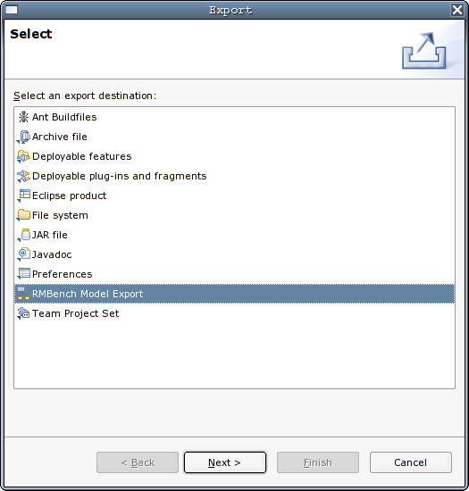
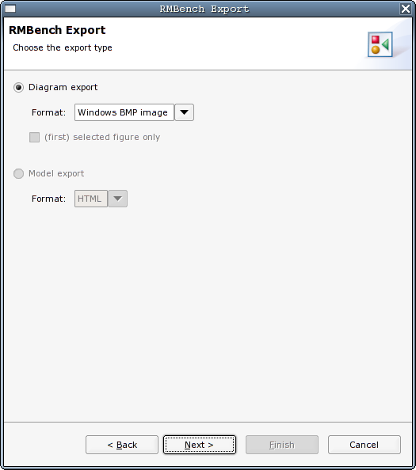

RMBench provides several ways of exporting
the information contained in a model to external formats and resources.
These are:
All these mechanisms can be extended via the corresponding extension
points. However, RMBench comes with a set of predefined exporters which
will be described in separate subsections.
You can access the export facilities by chosing the Export... item from the file menu. You will be
presented with the workbench-wide list of exporters, among
which you find the RMBench Model Export item.

After pressing Next >, you will see the
RMBench exporter page, which lets you choose the export type. You can
either export the currently open diagram to an image format, or export
the complete model.
Note: Version 1.0 of RMBench only supports Diagram
exporters as part of the commercial editions, and the Linux community
edition (because under Linux print support is not available)
Also note that all page items will be disabled if you dont have a
suitable element
(diagram or model) selected. Diagram export only works from an open
Diagram editor

When you click the Diagram export radio button on the export
type page, you can choose the desired export format. Heres a
matrix of the currently supported formats and their availability:
| Professional Edition |
Linux Community Edition |
|
| Windows BMP |
X |
X |
| JPEG |
X |
X |
| PDF |
X |
|
| SVG |
X |
If you have a particular table selected in the current diagram, you can also choose to export that table figure only.
After clicking Next > you find yourself
on the the file page, where you specify the file resource to
export to.